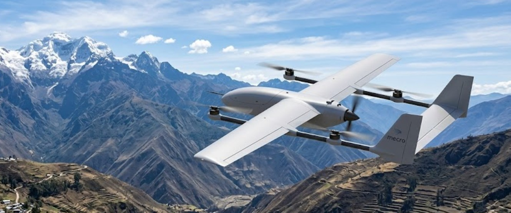
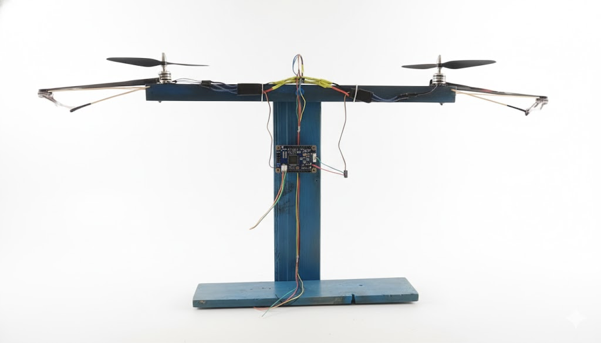

Visualización conceptual01 / Sistemas UAV
Arquitectura VTOL
Integración de ala fija y despegue vertical. Aerodinámica, control y transición entre modos de vuelo.
Diseño, integración y pruebas. Explora nuestras líneas de trabajo en hardware aeroespacial y sistemas de control.
3 líneas de trabajo

Visualización conceptualIntegración de ala fija y despegue vertical. Aerodinámica, control y transición entre modos de vuelo.
 Banco de trabajo MECRO
Banco de trabajo MECROUna línea de trabajo que conecta simulación, manufactura, aviónica y sistemas de recuperación.

Sistemas de controlUn banco de pruebas para estudiar medición inercial, motores y respuesta de un controlador PID.